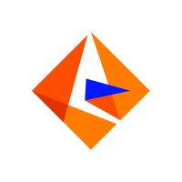
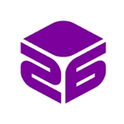

I graduated from BITS Pilani, India with a B.E.(Hons) in Computer Science and MSc.(Hons) in Economics in the year 2016.I had the oppurtunity to do the following projects in the course of 5 years.
Economic Analysis of Software Piracy and its implications, Thesis Project (Aug 2014 - Nov 2014)
Use of econometric and statistical techniques like hypothesis testing and regression analysis to mine interesting relationships. Analyzing the crossectional data of over 77 countries to determine the major drivers of software piracy.
Informatica Solutions Pvt. Ltd.(Jan 2017 - June 2017)
- 6-month long internship as part of the curicullum.
- Worked with the team Intelligent Data lakes at the India
Development Center of Informatica Solution Pvt. Ltd - the world's
leading company in data enterprise management headquartered in
Redwood City, California.
- Being at the ideation and initial development phase of this data
warehousing product, I developed and tested the two major services
related to metadata management and data ingestion in the lake.
- I got the opportunity to benchmark the product requirements by
independently researching into the concept of data lakes.
- With the guidance of my college professor-mentor, I presented the
team with gaps and required enhancements in the then current
featuring of the product which helped me in understand the
prototyping and road mapping of the products.
- My initiative of going out of the way and visualizing the product
with a fresh perspective to come up with meticulous insights proved
valuable to them.
Technologies used: Hive, JAVA, Maven
Cube26 Pvt. Ltd. (May 2014 - July 2014) 
- Spent my summer interning for a startup based out of Silicon
Valley, Cube26.
- Analytics dashboard for "Trending Apps", a widget shipped in
multiple phones manufactures by original equipment manufacturers
such as Micromax, Karbonn. I designed a scalable web panel for the
clients to track real-time user activity on the mobile widget to
enhance their value-added services and more effective targeted
marketing. The scalability was a great concern and therefore I chose
Django REST framework for the backed and Highcharts library for the
front end. The user base of those apps went from 0.2 M 2014 to 5M in
2015.
- Marketing Intelligence metric: Developed a panel for the
enterprises to analyzing their competitors move by giving them
visualization on the dashboard, timely alerts and also generating
relevant reports. This product was showcased in the VAS Asia
conference 2014.
- Recommendation System for the AppCenter, a catalog widget on the
phones manufactures by original equipment manufacturers such as
Micromax, Karbonn. I worked on Content-based Recommendation Systems
to rank and recommend the rights applications from the play store to
be populated in the catalog widget. This was done by involved
extracting features from descriptions of the applications on the
play store using tf-idf technique and classifying on the basis of
cosine similarity.
- Technologies used: Python, JavaScript, JQuery, REST framework
(Django), Highcharts.js, D3.js, Hadoop.
Compiler Construction (Feb 2015 - May 2015)
In this project, I designed a new programming language construct and implemented its compiler. I designed a general-purpose language for the Internet of Things (IoT) by adding features to the existing programming languages. It was a 4-month long project where we implemented lexer, parser, abstract syntax tree and code generator for the same.
Technologies Used: Python
Junk mail filter (Aug 2014 - Nov 2014)
Designed and developed a filter using Naive Bayesian Classifier with active learning techniques.Compared it with passive learning in terms of accuracy and conditional usage.
Technologies Used: C/C++